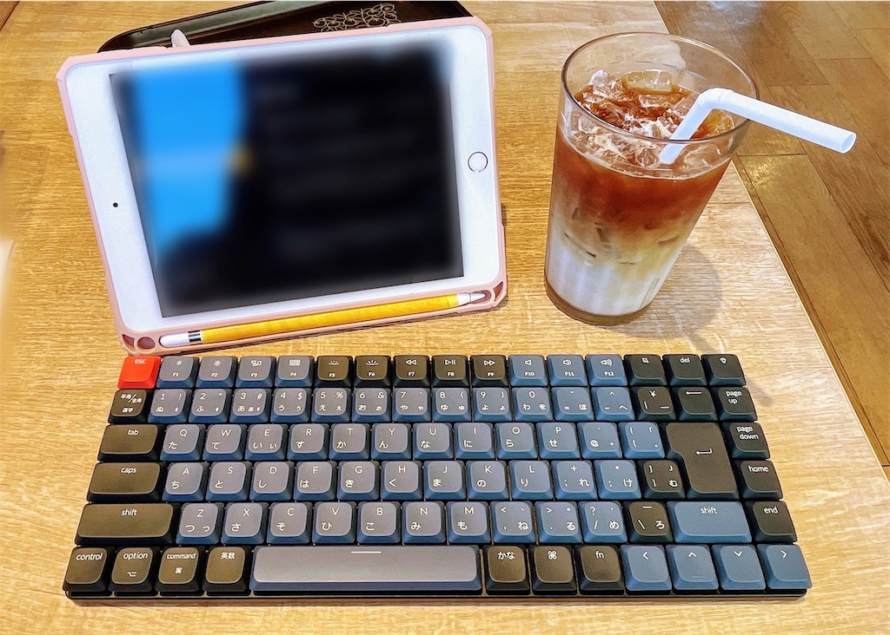
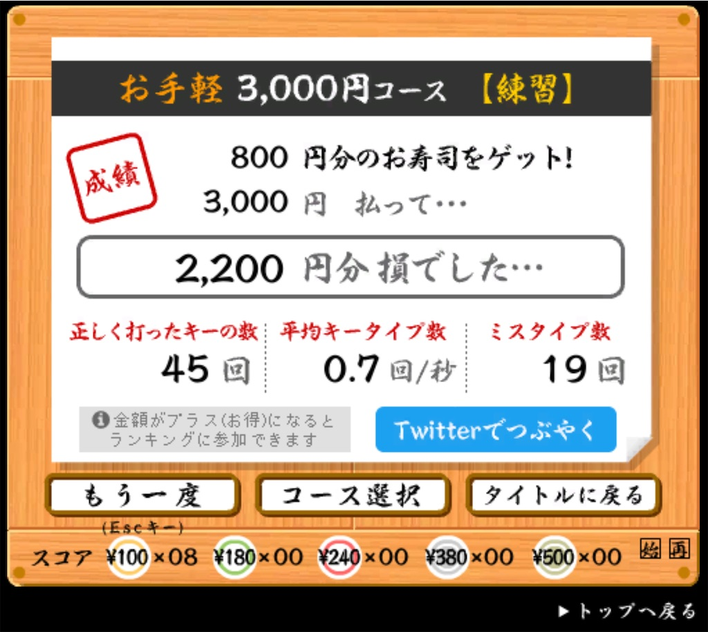

薙刀式を再開して、早いものでもう10日。
薙刀式を再開しようと思ったきっかけ自体は、ポメラによって親指シフトに慣れたからなんだけど、最近発売されたKeychron K3 ProのQMKワイヤレスによってiPadによる薙刀式での打鍵が実用的になり、それを機に本格的にiPadにメインの環境を移すことにした。
それまでは仕事も文字書きもMacでやっていたのだけど、パソコンを持ち歩くのが自分はあまり好きでなくて、カフェではポメラを使ったりフリックでiPhoneから書いたりしていたのが、ほぼiPadに落ち着いた。
物書きだけじゃなくて仕事をiPad経由でカフェですることも増えて、リモートデスクトップアプリやSSHからクラウドサーバや自宅サーバ、自宅のデスクトップに接続することで、開発関係も特に問題なくできている。いまはWi-Fiがどこにでもあるし、いい時代だなと思う。
薙刀式の打鍵速度自体は、寿司打上の表示で0.7回/秒ということで、まだあまり速くは打てないのだけれど、ブラインドタッチはできるようになってきたし、まとまった文章もぼちぼち打てる感じになってきて、ようやく薙刀式で何かを表現できるスタート地点に立てた気がする。
ちなみに寿司打はiPad上でもちゃんと動いていてちょっと感動したし、薙刀式でiPadでブラウザとか好きなアプリが使えることにだいぶ感動している。
薙刀式の打鍵感は、とてもバランスが良いという印象。
3年前に一時期薙刀式を練習していたときは比較対象がなかったので、新配列への新鮮な驚きと親指シフトへの抵抗感だけが印象として残ったのだけど、再度改めて新下駄配列やNICOLAと比較したときに、ちょうど真ん中くらいでバランスがとてもいいと感じた。
新下駄配列は全般的に軽快でサクサクした印象である一方、両手の同期に結構心理的に負担を割かなくてはならない。
NICOLAの場合は、親指シフトの同手同時押しがあり、かつ親指シフトキー自体が特殊なので、かなり使えるキーボードを選ぶし、打鍵のテンポ感はややゆっくりになる。
薙刀式はちょうどその中間的な位置付けなように感じていて、親指シフトをスペースキーにしているのでキーボードの相性問題がなく、かつ親指シフトと人差し指シフトのバランスが良いので、新下駄配列に感じる問題点である、記憶の難しさや打鍵自体の難しさ、そしてNICOLAに感じる一打一打の重たさを、薙刀式はバランスの良さで解決してくれている気がする。
実際、薙刀式を打ち始めてまだ10日目なのに、結構前から打ってたんじゃないかと思うような覚えやすさや打ちやすさ*1があって、親指シフトならではの地に足がついた感じがあるし、それでいて人差し指シフトをうまく組み合わせたことによる、軽快な打鍵速度を維持できる身軽さがある。
ちなみに "地に足がついた感じ" というのは、新下駄配列は結構「跳んでいる」とか「弾んでいる」といった印象を自分は持っていて、親指以外の両手の指を同時にテンポよく打つからなのか、飛び跳ねるような印象がある。一方の親指シフト系は親指を握ったり押さえつけたりするからか、しっかり地に足をつけて打っている感じが自分はする。
その打鍵感の違いは多分人によって好みがあって、昔の自分はあまり手を握って打ち進める感じは好きではなかったのだけれど、今は親指シフトへの抵抗感が減ったので、今後は好きになれそうな予感がしている。
あとは自分自身がどれくらい習熟できるか次第なのだけれど、iPadの推測変換やライブ変換が楽しいのも相まってか、習得初期にしてはサクサク文字打ちできるし楽しいので、これなら楽しく習得していけそうな気がする。
新下駄配列を習得していた初期の頃は、記憶量が多すぎるせいなのか、あるいは打鍵コンビネーションが多すぎるせいなのか、いつまで経っても普通に打てなくて苦労したのだけれど、薙刀式はゆっくりであれば割と早期に普通に文字打ちしていけるし、例えば仮にいくつかの拗音拡張を覚えてなかったとしても、思い出すことは容易だし、別の打ち方をすることもできるので、一種のパズルみたいな楽しさがあるのはいいなと思う。
もちろんこれらを神経レベルでスムーズに打鍵していくことは多分長い時間がかかるので大変だろうと思うのだけれど、だからこそコンビネーションがすぐ頭に浮かぶのはいいことだなと思うし、神経レベルで慣れなくても打てる楽しさは、デザインの力だなと思う。
これらはどちらが優れているとかいうよりも、哲学や戦略の違いなので、いろんな面で棲み分けされていてうまく使い分けができるし、多様性というのは改めて素晴らしいなと思う。
*1:3年前に使ってた時期があるのでその影響も多少あるかも。